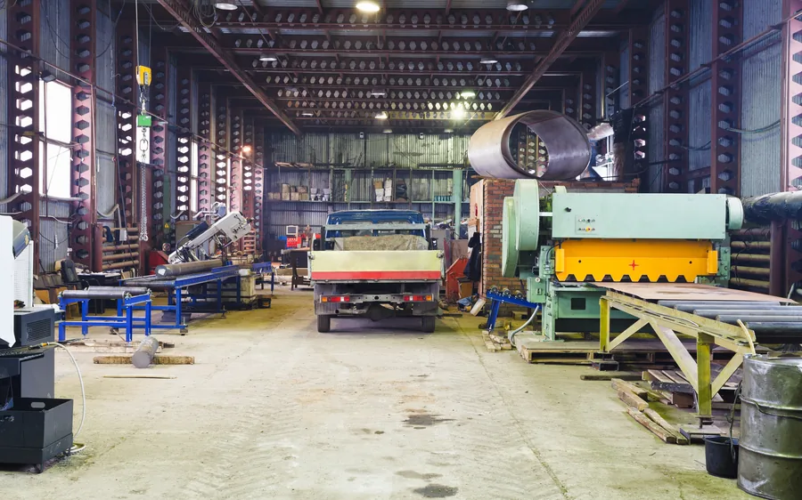

For buyers
Buy plant, machinery and vehicles through trade-only online auctions
You are bidding against other businesses rather than the public. Bid online from anywhere in the UK or overseas.
We sell excavators, telehandlers, forklifts and dumpers, vans, tippers, HGVs and trailers, tractors and farm machinery, catering and workshop equipment, and the full contents of businesses that are closing. Stock comes from owners, dealers and traders, and from administrators and receivers clearing a site.
Buyers are dealers, contractors, operators, hauliers, farmers and exporters. Manual approval and identification may be required before an account can bid, so register in advance and you are ready when the right lot appears.
What comes up for sale
Six categories run through our sales, plus the mixed contents of businesses that are closing. Lots come up week to week, so it is worth watching the category you buy in.

Liquidation and insolvencyWhole-site disposals where a business has closed, from a single workshop to everything on the premises.How buying at auction with us works
Six steps, from registering to driving it away.
-
Register to bid
Set up an account and register for the sale. Manual approval and identification may be required before an account can bid, so do it ahead of the close.
-
Read the lot
Each lot page carries the seller's description and photographs, the VAT treatment, and the buyer's premium and internet surcharge that apply, on its Additional Fees tab.
-
View by appointment
Viewing is available strictly by prior appointment and is strongly recommended, particularly on anything mechanical.
-
Set your maximum and bid
Work out your all-in figure, enter it as a maximum bid, and the platform bids up to it for you. You often win below your ceiling.
-
Pay by bank transfer
We invoice you after the sale, payable in full by bank transfer within 24 hours.
-
Collect by appointment
Once your payment clears we send the collection details. You collect from the seller's premises at a booked time, with your own transport or your own haulier.
The closing rule
Nobody wins on the buzzer
Every lot has its own end time, and the lots in a sale close a few seconds apart. Bid in the last ten minutes and that lot's clock resets to ten minutes.
It resets again on the next bid, and the lot closes when ten minutes pass with nobody bidding. That makes a lot won on price. A bid placed in the final second buys no advantage, because anyone still interested gets another ten minutes to answer it, and if you are outbid late you get another go.
The practical answer is a maximum bid. Work out what the lot is worth to you all in, enter that one figure, and the platform bids up to it in steps on your behalf, through every extension, whether you are at your desk or not. Most buyers win below their maximum, and nobody ends up chasing a number they settled on at nine in the evening with a clock running.

Work out the full cost before you bid
Four things make up a winning bid, and all of them are on the lot page before you commit: the hammer price, a buyer's premium, any internet surcharge, and VAT.
| What | How it is charged | Where to find it |
|---|---|---|
| Hammer price | The figure you bid | The lot page |
| Buyer's premium | A percentage of the hammer price. The rate varies by lot | The lot's Additional Fees tab |
| Internet surcharge | A further percentage of the hammer price. Also varies by lot | The lot's Additional Fees tab |
| VAT | 20% on the hammer price where it applies to that lot, and on the premium and surcharge | The lot description |
| Collection and transport | Yours to arrange, from the seller's premises by appointment | Allow for it in your ceiling |
Add them up and you have your real ceiling. Set it before the lot opens and you never do arithmetic with a countdown running. Work backwards from what the machine is worth to you finished and earning, and the number you enter looks after itself.
There is no listing fee, no card-processing charge and no buyer administration fee on top. Pay and collect on time and the invoice you receive is the whole of it.
Whether you can reclaim the VAT depends on your own VAT position and on the treatment of that particular lot, so read the lot description and take your accountant's view where the figures are tight. Some lots carry no VAT on the hammer price at all.
Inspect before you bid
Viewing is available strictly by prior appointment and is strongly recommended. Send us the lot number and we will arrange a time.
Lots are sold as seen, where lying. Descriptions and images are supplied by the seller and are for guidance only, so carry out your own inspection and due diligence before you bid. Any testing must be agreed in advance and is subject to the seller's site and safety requirements.
Where a visit is not practical, ask us while the lot is still open. We can go back to the seller for more photographs, a particular measurement, or whatever detail will make up your mind.


Collection and transport after you win
Buyers are responsible for arranging collection and transport. Any delivery option specifically stated within a lot is provided by the seller and subject to separate agreement.
Collection is from the seller's premises at a booked time, once your payment has cleared. We send you the details and you or your haulier arrive to a confirmed slot, so nobody turns up to a locked gate.
On anything heavy there are two questions worth answering before you bid: who is loading it and with what, and what size of vehicle can actually reach your own yard. Ground conditions and a narrow entrance have stopped more collections than distance ever has.
Overseas buyers
Buy from anywhere, and export it
Overseas trade buyers are welcome to participate. Buy a UK lot without leaving your own country, and bid in the same sales as every other trade buyer.
Export buyers are responsible for arranging transport and completing all export documentation. On an export sale the VAT is charged as a deposit, and any refund is conditional on satisfactory export evidence being supplied to both the seller and UAG within 28 days of the invoice and in accordance with the auction terms. VAT charged on the buyer's premium is not refundable.
UK plant, machinery and commercial vehicles travel well and hold their value abroad, which is part of why good stock comes through our sales in the first place.
Questions buyers ask
How do I know what a lot will cost me?
Everything is on the lot page before you bid: the buyer's premium and internet surcharge on the Additional Fees tab, and the VAT treatment in the description. Add them to the hammer price you have in mind, allow for collection and transport, and that is your ceiling.
Can I see a machine before I bid on it?
Yes, strictly by prior appointment, and it is strongly recommended. Send us the lot number and we will arrange a time. Any testing must be agreed in advance and is subject to the seller's site and safety requirements.
When do I pay, and how?
We invoice you after the sale and payment is by bank transfer, in full, within 24 hours of the invoice. Once it clears we send you the collection details.
What happens at the end of a lot?
A bid in the last ten minutes extends the lot by ten minutes, so it stays open while anyone still wants it. Where the bidding finishes below the seller's reserve, we put your highest bid to them and come back to you, so a lot that closes without selling is not always the end of it.
How do I arrange collection and transport?
Collection and transport are your responsibility. Once your payment clears we send the collection details, and you or your haulier collect from the seller's premises at a booked time. Any delivery option specifically stated within a lot is provided by the seller and subject to separate agreement.
I want to bid on two similar lots. What should I do?
Bid on the one you want first, and move to the second only once you have lost the first. Each winning bid is a separate commitment to buy, so a maximum left on three similar lots can win you all three.
What if the bidding does not reach the seller's price?
Then we go back to the seller with your highest bid. Plenty of lots are sold that way in the days after a sale closes, so if you were the top bidder and the lot did not sell on the day, it is worth staying by the phone rather than writing it off.
I have never bought at auction. Where do I start?
Register, then watch one sale without bidding in it. You will see how the lots close, how the prices move in the last half hour, and where the category you want tends to land. Pick a lot for the next sale, work out your all-in ceiling, and bid to it. The guides go through each category in more detail.
Do I need to be in the UK?
No. Bidding is online and overseas trade buyers are welcome to participate. Export buyers arrange their own transport and export documentation, and any VAT deposit refund is conditional on satisfactory export evidence reaching both the seller and us within 28 days of the invoice. VAT on the buyer's premium is not refundable.
Ready to bid?
Register now and you will be set up and approved before the next lot you want comes up.
Have a question on a particular lot? Send us the lot number. If auctions are new to you, the guides go through one category at a time and cover what to look for. The provisions that govern every sale are in the auction terms and conditions.